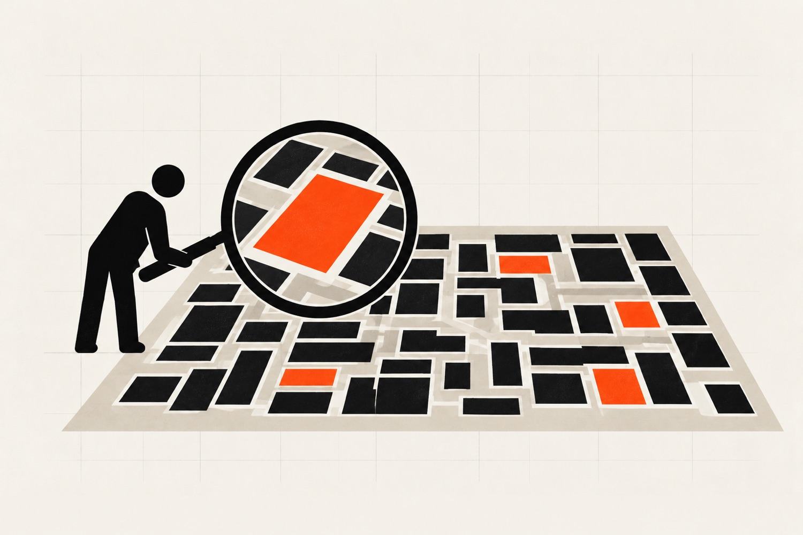

Audit.
- Scope
- Fixed
- Length
- One to two weeks
A paid one to two week discovery. We walk your business, identify five to ten high-impact opportunities, and deliver a prioritised roadmap with effort estimates. Most builds start here.
- Stakeholder interviews and process mapping
- Shadow sessions with the people doing the work
- Prioritised opportunity roadmap with ROI estimates
- Effort estimates per opportunity (S, M, L, XL)
- Build-ready scope for the top three opportunities
About one in five audits ends with "don't build it, here's why." We think that's healthy. You own the roadmap either way.